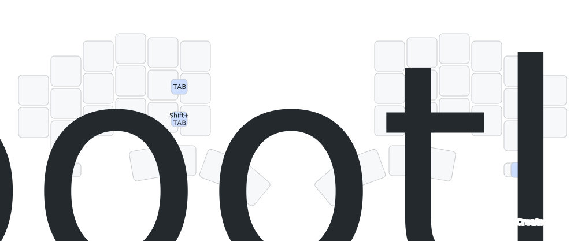

Default Keymap
デフォルトキーマップ
初期状態では以下のキーマップが設定されています（購入時期によって異なる場合があります）。中央の文字が通常入力、下部の文字は長押しで入力されます。
大西配列を採用しています。QWERTY配列ではありませんのでご注意ください。
キーに印字がないので、慣れないうちはキーマップを確認（画面上に表示しておくか、印刷などをしておく）しながら使うことをおすすめします。大丈夫、使っているうちに慣れますよ。
英数キー長押しで記号数字レイヤーが、かなキー長押しで操作系レイヤーが有効になります。
Shiftは、どちらの手でも人差し指か中指のホームポジションのキーを長押しすることで入力されます。
ミニボタンは、左手側を左から①②、右手側を左から③④としたとき、以下の機能が割り当てられています。
- ①：数字記号レイヤーの数字と一部記号をテンキー入力か通常の入力か切り替える
- ②：Ctrl+Sが押される こまめに保存しよう！
- ③：Bluetoothプロファイルを切り替えるためのBTレイヤーに切り替える
- ④：BTプロファイルを次の番号に切り替える（4番の次は0番に戻ります）
- ①+②：NumLockが押される 数字記号レイヤーはテンキー入力モードがデフォルトなので、NumLockはオンの状態で使うことを前提としています
- ③+④：ブートローダーモードに入る（キーボードファームウェアの書き換えに使えます）
TABは左手側の中央行の右2つのキーを同時押しすることで入力できます。2つのキーのちょうど間の部分を人差し指で押すのがおすすめです。
Bluetoothプロファイルを切り替えるためのレイヤーは、右手側の左のミニボタンを押している間有効化されます。